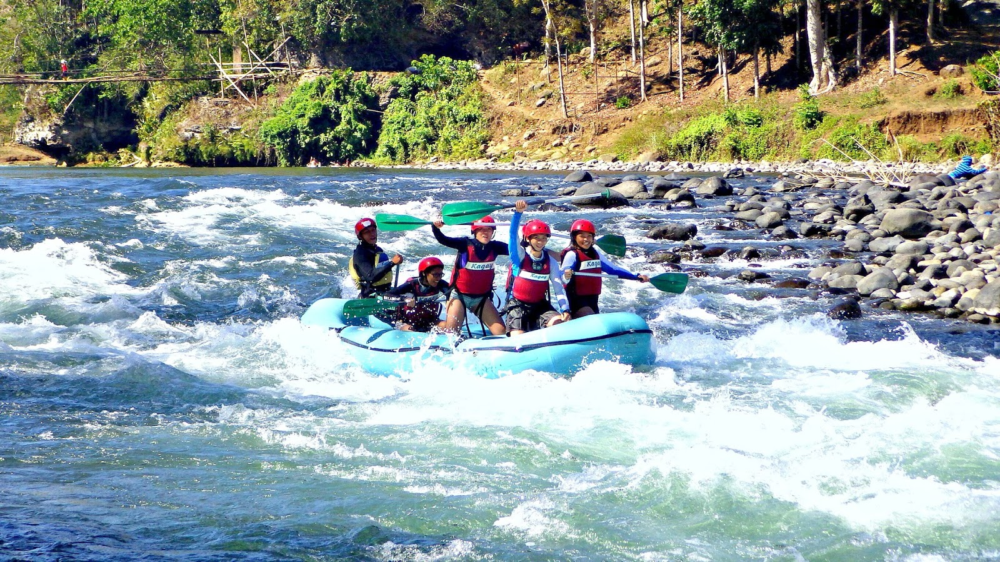
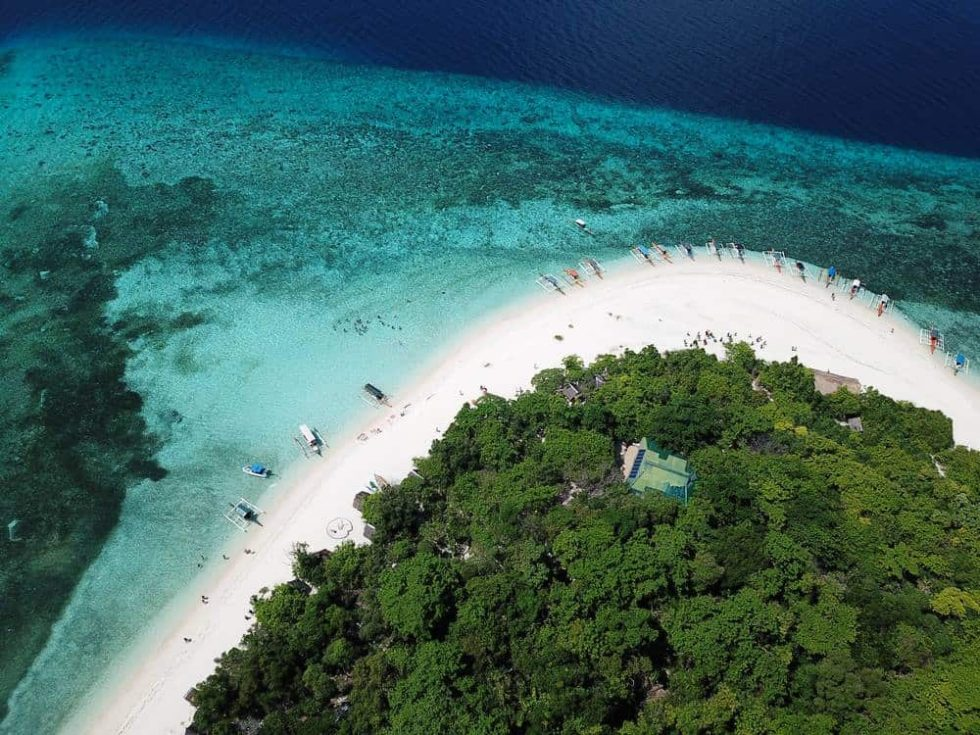
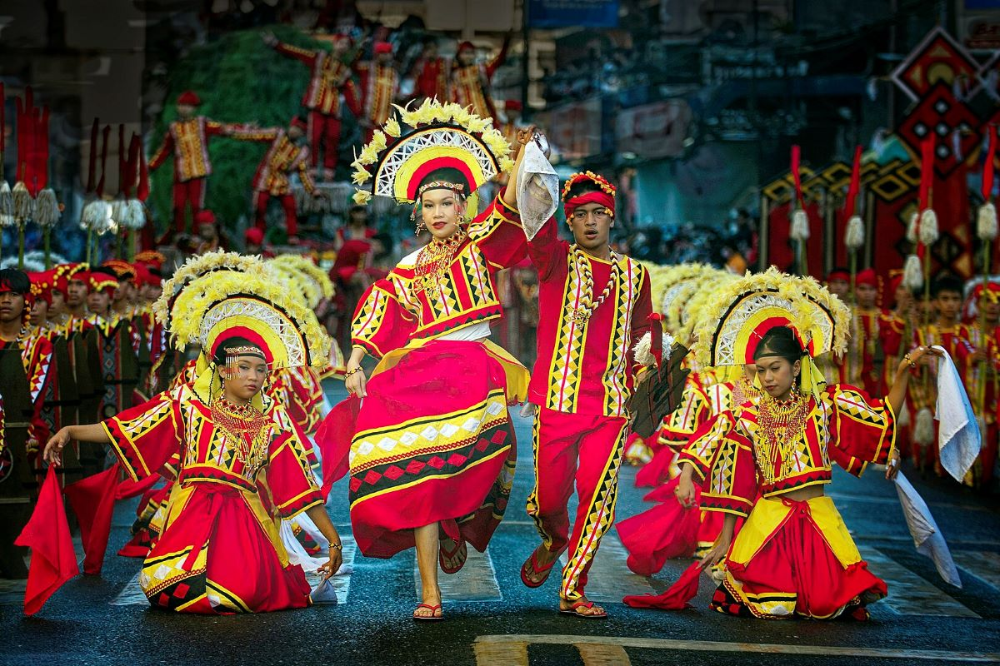
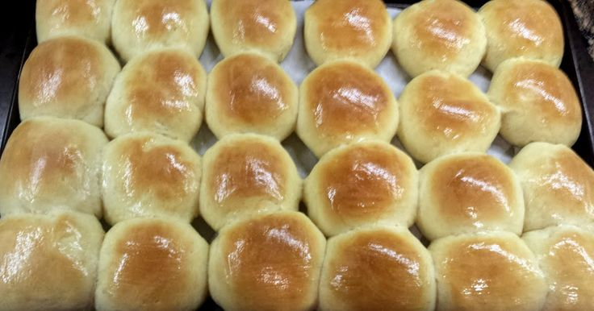

01 / Outdoor
Adventure
- Try guided white-water rafting on the Cagayan de Oro River.
- Go island-hopping or snorkeling around Camiguin.
- Explore outdoor parks and zipline attractions in the Bukidnon highlands.


Make the most of your visit
You do not have to do everything in one trip. Pick a few activities that fit your budget, schedule, and comfort level.
Choose your kind of day
Use these ideas to start planning your visit.
01 / Outdoor


02 / Outdoors


03 / Community

04 / Local food

Small local eateries and markets are a good way to discover everyday regional food.